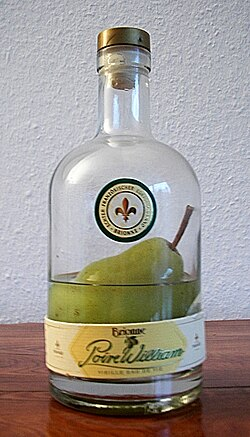

Hruška je druh ovoce, plod hrušně, který je malvice (podobně jako jablko). Plody vyšlechtěných odrůd jsou jedlé a chutné. Tyto šťavnaté plody vyšlechtěných odrůd se podle doby dozrávání, respektive sklizně, dělí na letní, podzimní a zimní. Letní jsou nejméně trvanlivé a zimní naopak vydrží nejdéle. Hrušky je možno skladovat, nevydrží ale tak dlouho jako jablka. Hrušky jsou ovoce s velmi nízkým obsahem vitamínu C. Nezanedbatelný je ovšem výskyt vitamínu B, a to hlavně pod slupkou. 100 g hrušek má přibližně 213 kJ a 51 kcal. Odrůdy Příklady odrůd rezistentních k strupovitosti a padlí jabloňovému (trend začátku 21. stol.): Bohemica – pozdně zimní, dlouhá skladovatelnost; Decora – zimní, šťavnaté plody, načervenalá líčka; Dicolor – zimní, atraktivní vzhled barevných plodů, příjemná aromatická chuť; Erika – raně zimní, sladce navinulé chuti další zimní, českého původu: Amfora, Astra bohemica, David, Erika, Jana, Konvert, Omega[1] světové: Williamsova čáslavka Naši Pro plody hrušně asijské se vžilo označení naši, i když je správně „nash-li“, neboť „li“ znamená v čínštině hrušeň. Williamsova pálenka Využití Pokrmy: dušená hruška, želé, pyré, kompot Sušené hrušky: kandované sušené mleté: pracharanda, tradiční přísada do sladkých pokrmů. Nápoje: džusy hruška v červeném víně Likéry nebo destiláty: nenáročnost zrání hrušek umožňuje zrání malých plodů na stromě v lahvích, po dozrání se lahve s nimi doplní destilátem. česká a moravská hruškovice (např. firma Rudolf Jelínek) slovenská hruškovice (např. St. Nicolaus) britská Williamsova hruškovice (43%), také pod franc. názvem "Eau de vie" (voda života)
Odrůdy:
- Bohemica – pozdně zimní, dlouhá skladovatelnost;
- Decora – zimní, šťavnaté plody, načervenalá líčka;
- Dicolor – zimní, atraktivní vzhled barevných plodů, příjemná aromatická chuť;
- Erika – raně zimní, sladce navinulé chuti